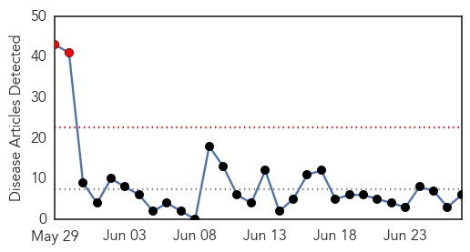
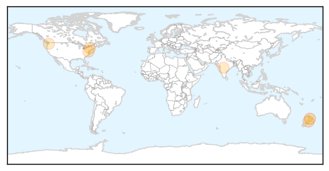
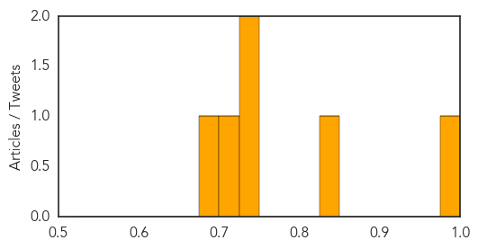
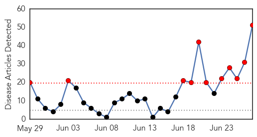
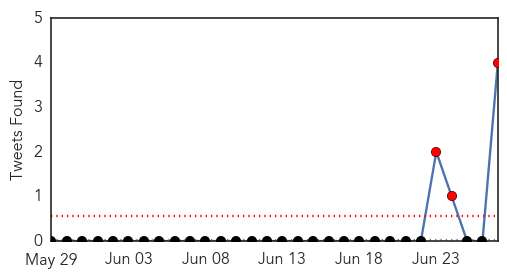
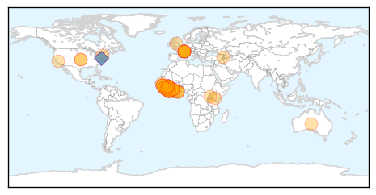
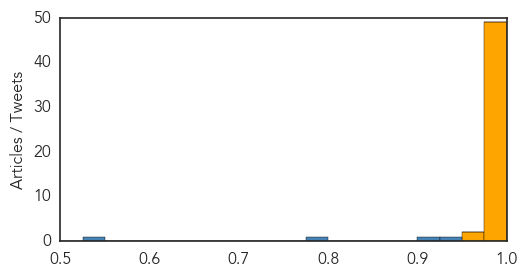

Measles
30-Day Web Trend
2 alerts, 0 warnings

30-Day Twitter Trend
0 alerts, 0 warnings

Article Locations
Article Confidences
Top Articles:
- 0.986
- Measles immunisation message pushed
- 0.844
- Parents urged to check MMR vaccine
- 0.736
- Measles outbreak in Pierce, south King counties
- 0.727
- Measles outbreak in Pierce, south King counties
- 0.700
- In New York, unvaccinated kids may be sent home despite religious exemption, court says
- 0.677
- In New York, unvaccinated kids may be sent home despite religious exemption, court says
Top Tweets:
-
No tweets found for Jun 27, 2014
Ebola
30-Day Web Trend
11 alerts, 0 warnings

30-Day Twitter Trend
3 alerts, 0 warnings

Article Locations
Article Confidences
Top Articles:
- 1.000
- 'Drastic Action' Is Needed to Combat the Worst Ebola Outbreak Ever
- 1.000
- WHO Warns West Africa Countries of Ebola Spread
- 1.000
- West African nations should be prepared for Ebola
- 1.000
- West African nations should be prepared for Ebola
- 1.000
- Health workers struggle to control West Africa Ebola outbreak — SOS Children
- 1.000
- Ebola Outbreak in Sierra Leone Deadly
- 1.000
- Could Ebola Spread to the United States?
- 1.000
- West African nations warned to be prepared for Ebola
- 1.000
- Western Africa should brace for Ebola
- 1.000
- Risk of Ebola spread in West Africa, WHO warns
- 1.000
- WHO says 'Drastic action needed' to stop Ebola outbreak
- 1.000
- Africa's deadly Ebola outbreak is turning into cross-border crisis
- 1.000
- The most from the coast
- 1.000
- The most from the coast
- 1.000
- Deadliest Outbreak of Ebola Virus in History Spreading in West Africa; Samaritan's Purse, Humanitarian Groups Send Emergency Help
- 1.000
- WHO urges West African nations to prepare for Ebola
- 1.000
- ‘Drastic action is needed’ now to stop Ebola epidemic
- 1.000
- Ebola challenges West African countries - WHO
- 1.000
- Ebola Outbreak Not Out of Hand
- 1.000
- Ebola creates crisis situation in West Africa
- 1.000
- Q&A: What's Behind Worst-Ever Ebola Outbreak in West Africa?
- 1.000
- The Henry J. Kaiser Family Foundation
- 0.999
- This is now the deadliest ebola outbreak on record — and it’s getting worse
- 0.999
- Risk of Ebola spread in west Africa, WHO warns
- 0.999
- West Africa at risk of Ebola spread says WHO
- 0.999
- Otago Daily Times Online News : Otago, South Island, New Zealand & International News
- 0.999
- Risk of Ebola Spread in West Africa, WHO Warns — Naharnet
- 0.999
- The most from the coast
- 0.999
- The most from the coast
- 0.999
- Guinea Ebola Outbreak Is Worst Ever
- 0.999
- 'Drastic action is needed' now to stop Ebola epidemic
- 0.999
- Worst Ebola outbreak on record needs urgent action, WHO says
- 0.999
- WHO to hold meeting on Ebola in Accra
- 0.999
- Regular Press Briefing by the Information Service, 27 June 2014: Ebola Outbreak in West Africa - Sierra Leone
- 0.999
- West African nations should be prepared for Ebola: WHO expert
- 0.999
- WHO denies Ebola outbreak out of hands - Xinhua
- 0.999
- #Ebola 'threatens more West African nations'
- 0.998
- Ebola Outbreak in West Africa has become a ‘Cross-Border African Crisis, Says WHO
- 0.997
- WHO Reduces Ebola Death Toll In Sierra Leone
- 0.996
- WHO Warns against Proportion of Ebola Outbreak in West Africa
- 0.996
- UPDATE 2-West African nations should be prepared for Ebola - WHO expert
- 0.996
- UPDATE 2-West African nations should be prepared for Ebola - WHO expert
- 0.995
- Ebola 'Out of Control' in Worst Outbreak Ever
- 0.994
- Medics vent anger at government inaction over Ebola
- 0.993
- Researchers Develop Experimental Treatment for Deadly Nipah Virus
- 0.991
- Ebola now out of control in West Africa as WHO fears cross border contamination
- 0.988
- Deadly Ebola may now affect tourism in West Africa with Senegal and Mali on the horizon
- 0.987
- Ebola virus may have made its way into Spain
- 0.982
- The most from the coast
- 0.967
- A Doctor Tries To Save A 9-Year-Old Stricken With Ebola
Showing top 50 articles...
Top Tweets:
- 0.929
- Dr. Adalja: Ebola will likely not spread widely outside of Africa, beyond one or two imported cases. The virus just isn't that contagious.
- 0.910
- Dr. Adalja: In this outbreak, 65% of infected individuals have died. Ebola
- 0.776
- Dr. Adalja: It's critical to understand what behaviors are driving the outbreak and allowing continued transmission of ebola.
- 0.540
- Dr. Adalja: Ebola is one of the most severe viral infections in terms of case fatality rate, up to 90%.